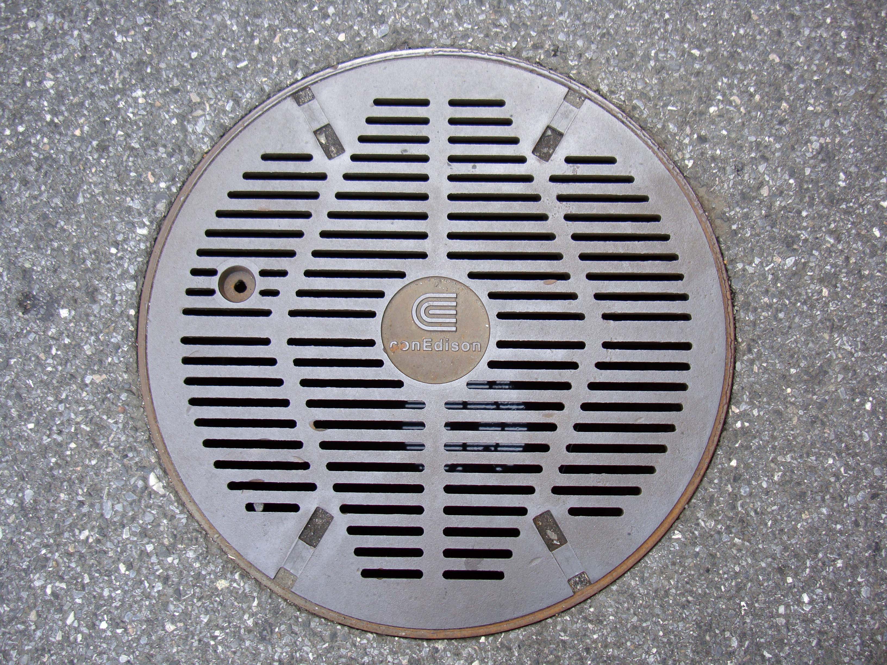

On a Saturday morning well before sunrise, psychotherapist Siena Vaccara, 27, woke to a thundering boom outside of her apartment on 8th Avenue in Brooklyn’s Chinatown.
“ It was the kind of explosion that was so loud you, you didn't even wake up and gasp,” Vaccara said. “ You were immediately feet on the floor standing up.”
A red haze glowed outside her second-floor window and the smell of smoke started to creep into her apartment. At the corner of her street, a manhole was ablaze. Flames whipped against the rim of the manhole while a thick gray cloud. Before Vaccara could process what was happening, a second explosion went off. Now, the smoke was thick.
“It was really scary because although we had the windows closed, the apartment was filling up with smoke, and it was hard to breathe,” Vaccara said.
She thought about her neighbors. On her busy stretch of 8th Avenue, there are outdoor markets, a fruit stand, a Buddhist temple and streams of pedestrians. The timing had been lucky.
“If that happened during the day, that would've been a tragedy.”
Vacarra’s experience is far from isolated. New York City sees thousands of manhole fires every year, according to FDNY dispatch data.
More than 5,200 manhole fires were recorded in the current fiscal year* alone – which includes last winter. That’s the highest number of fires and explosions since 2021 and more than triple triple the 1,539 incidents logged in 2023, when fires dipped to a near-decade low.
The numbers raise a question that’s haunted the city for decades: why can’t New York fix its exploding manhole problem?
The latest fire incident dispatch data shows fires have risen three years running, and for the first time, a New York City News Service neighborhood-level breakdown reveals when and where they cluster.
Not every plume coming from NYC’s manholes is worth an alarm. In fact, the steam giving the city its gloomy aesthetic is part of a separate steam distribution system, and steam venting from grates is routine. What residents should watch for is smoke.
The FDNY says New Yorkers should always call 911 if they see a smoking manhole. "Manhole covers weigh 300 pounds and can be blown into the air with little or no warning," the department said in a statement.
Manhole fires are largely a byproduct of New York City’s aging underground electrical grid and winter weather: road salt, rain, and melting snow seeps into underground infrastructure, gradually eroding the protective coating around electrical wires. Once those wire jackets break down, exposed wires can touch and spark – aided by highly conductive salt water. As the cables smolder they release carbon monoxide and other gases. In the confined space below the street, those gases can build up and, with enough oxygen and an ignition source, turn a smoking manhole into a fire – or explosion.
The consequences can be disastrous. This past February, two children ages four and two – and a 57-year-old woman were hospitalized with burns when a manhole cover shot up from a street in Tribeca. Five years earlier, a paramedic, a Con Edison worker, and a firefighter were all injured during a manhole blast in Midtown East that also damaged cars and storefronts. And in 2008 a Con Edison worker George Dillman, 26, died while trapped in a manhole that exploded in Brooklyn.
Even though winter is peak season for manhole events, the high volume of electricity use on hot summer days also takes a toll on underground electrical infrastructure.
Williamsburg resident Bo Johnson, 25, experienced that impact last June when a heat dome settled over the city. The National Weather Service issued an extreme heat warning, the highest heat alert level signaling deadly temperatures. On June 25, as the mercury hit 98 degrees Fahrenheit, a manhole explosion took out power to his apartment building and part of his block.
“It was pretty terrible to be frank,” said Johnson about the blistering heat in his top floor apartment. “It was just absolutely stifling in there.”
Johnson waited up to 36 hours for his power to return. He became increasingly worried about his elderly next door neighbors.
“It started to get to the point where it seemed dangerous for certain folks,” said Johnson. “At that point, I had tweeted at our city council [representative.] The power came on a little while after that. I'm not sure if those two were correlated.”
FDNY data shows that firefighters responded to nine manhole incidents within Johnson’s Brooklyn zip code on June 25. One of the recorded manhole incidents was on Johnson’s street. He doesn’t remember receiving compensation or additional support from electricity provider Con Edison or from the city during the outage.
This past February, the city experienced the second-highest number of manhole fires in a decade, a New York City News Service analysis revealed. A close look at the week with the highest reported fires shows how the overlapping factors of salt, precipitation and cold weather contributed to the incidents.
First, the city spread the corrosive – and conductive – road salt, then precipitation helped push salt into aging underground infrastructure. Patterns of thaw and freeze can make materials expand and contract, leading to brittle material that’s more prone to cracks that expose wires or that let salt water seep in.
Manhole fires don’t strike evenly across the city. A neighborhood-level analysis from fiscal years 2020 through 2026 shows that a few ZIP codes in Brooklyn and Queens recorded far more incidents than the rest of New York City combined. Ridgewood and Glendale, along the Brooklyn-Queens border, logged more than 500 manhole fires and incidents over that period, more than any other neighborhood in the city. Nearby Williamsburg, where Johnson lives, Park Slope, Gowanus, and Borough Park also ranked among the most affected areas. By comparison, no zip code in Manhattan had more incidents than Sunset Park, where Vaccara and her wife live.
What makes these neighborhoods more vulnerable is partly understood, partly speculative. Gowanus as well as part of North Brooklyn are flood-prone areas. Chronic water infiltration accelerates underground corrosion. Ridgewood and Glendale sit near major highway junctions – heavy truck traffic may accelerate wear on underground infrastructure.
Council Member Shahana Hanif, whose District 39 includes Gowanus and Park Slope, the second most-affected council district in the city, has been vocal about the problem.
“This winter's power outage caused by manhole fires was absolutely devastating to thousands of my constituents,” Hanif said. “In NYCHA apartments, elderly and disabled tenants were trapped in their dark and freezing apartments.”
More than 2,000 residents in her district were left without power, and some without elevator access, during some of the coldest days and nights that New York City has recently seen. A number of residents were forced to stay in hotels. Months later, many are still fighting Con Edison for reimbursement.
In April, Hanif co-authored an op-ed in the New York Daily News alongside Council Members Sandy Nurse and Chi Ossé, arguing that for-profit utility monopolies like Con Edison cannot be trusted to maintain the infrastructure New Yorkers depend on – and calling for public power.
“Con Edison is a for-profit monopoly and is accountable to its shareholders, not to the New Yorkers who depend on its power,” Hanif said. “In the short term, they must be forced to properly maintain their infrastructure. In the long term, the State, not Con Edison, should control our utilities.”
Council Member Jennifer Gutiérrez, whose District 34 covers the heavily-impacted areas of Ridgewood and Bushwick, declined to comment on the issue.
When a manhole smokes, the FDNY shows up first. But what they can do is usually limited. Standard procedure is to set up caution tape, notify the utility company responsible for the manhole, and monitor nearby buildings for carbon monoxide. Firefighters generally do not pour water into a burning manhole unless the utility company specifically directs them to – and for good reason: Water can damage the underground infrastructure or even cause electrocution, trigger an explosion, and push toxic CO through underground conduits into adjacent buildings and structures.
That dynamic reflects a broader fragmentation of responsibility. According to 311, manholes beneath New York's streets are owned by a patchwork of entities: Con Edison, the city's Department of Environmental Protection, the MTA, Verizon, National Grid, and even the FDNY itself.
Manhole incidents are a frequent but uneven threat: many calls are routine, but conditions can escalate quickly into dangerous situations involving exploding covers, carbon monoxide drifting into nearby homes, and toxic gases that endanger both residents and firefighters, who are trained not to step on any nearby manholes because the danger may not be limited to the one that is visibly smoking or burning. Connected underground spaces can carry heat, gases, or pressure beyond the obvious location, so another nearby manhole could also be unstable or hazardous.
Con Edison doesn’t publicly release its records of manhole fires and explosions. In response to NY City News Service’s requests for this data, Con Edison instead directed reporters to file an access to information request with the New York Public Service Commission. When tragic manhole incidents occur, victims – and even public officials – scramble for information.
On Thanksgiving Day in 2024, a manhole explosion blasted through part of an apartment building in New York City Council Member Lincoln Restler’s Brooklyn Heights District. Four months later, at a city council Fire and Emergency Management committee meeting, Restler addressed FDNY Commissioner Robert Tucker and Chief of Department John Esposito about the incident. He wanted to know the basics: what happened, how to get faster answers to impacted residents, and who he could follow-up with.
“People still haven't been able to move back into their homes,” said Restler. “And I've essentially gotten pats on the head and radio silence from Con Ed and FDNY in the intervening four months.”
Con Edison did not respond to requests for an on-the record interview with a representative, or respond to questions about why New Yorkers must still face thousands of manhole events nearly every year.
But the company does say it’s working to tackle the problem. In an email, Media Relations Manager Ann Marie Corbalis said that since 2005 Con Edison has been installing vented covers throughout the system. More ventilation can reduce the build up of explosive, toxic gases, and limit the risk of a manhole cover catapulting up from the pavement. Remote inspection and thermal sensor tools have also bolstered the utility’s ability to detect defects before they become deadly.
According to reporting from The Citya>, the Public Service Commission has the power to fine Con Edison for manhole events, but has chosen not to enact it. Corbalis highlighted that Con Edison’s underground inspection program requires that “high priority structures are inspected every five years, medium priority structures are inspected every eight years, and low priority structures are inspected every ten years.”
Still, questions remain over why Con Edison can’t invest more to update aging infrastructure and tackle the problem. In the meantime, residents will continue to face the dangers of manhole fires, smoke, toxic fumes, and accompanying power-outages.
Siena Vaccara of Brooklyn’s China Town won’t soon forget the impact of the manhole explosions on her street that sent smoke spewing into her apartment. When she returned to her evacuated apartment after the fires, she faced a new challenge.
“Our apartment was covered in soot,” said Vaccara. “ We just spent maybe 48 hours cleaning. We cleaned the walls, we cleaned the ceilings, we cleaned every fabric in the house.”
Vaccara wants to ensure fewer New Yorkers have to live through a similar experience. She’s hoping the Mamdani administration can bring new momentum to the issue.
“Similarly to the city initiative to fix the storm drains,” said Vaccara. “I want to see similar funding and press on the manholes … They have to do something. They just have to do something. We can't have manholes exploding.”